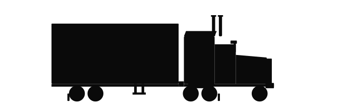

A trucking company runs a fleet of heavy vehicles. A human needs to consider a large number of variables to build a daily schedule:
…and the constraints they have to honour:
Sounds easy. We just measure before, and then measure after?
Trucking metrics move for plenty of reasons that have nothing to do with the agent.
Did the agent cause the change, or did it just happen during the change?
Pick ratios that follow what the agent is actually optimising, not what's easiest to count.
A good agent batches deliveries on a route: heavier load, more fuel per km. Per-km penalises consolidation; per-delivery rewards it.
Hold the season constant: compare this year's Q1 with last year's Q1.
The catch The business may have changed substantially across those periods: new contracts, lost customers, different fleet size. We're not comparing apples to apples.
Roll out the agent in one part of the business. Hold the rest as a control.
The catch Unless the business has cleanly separated operations, this is difficult to set up. The extra operational burden risks undermining buy-in for adoption.
Run the agent fleet-wide for a period, then disable it for a period. Alternate over weeks.
The good news Only one system is active at a time, so there's no contamination between arms. Seasonality and business drift balance across both sides once you have enough switches.
No rollout. Build a digital twin of operations and run the agent on the model instead.
The catch The moment you step into the model, the universe splits. The further time passes, the harder it is to compare the real fleet and the twin.

Successful measurement isn't just about the delta in numbers. It's about the "business smarts" of the rollout.
If they don't buy into the project, they'll actively work against the change.
Transparency builds trust. Consistent reporting keeps the client in the loop.
Set realistic expectations. AI is an optimiser, not a magic wand. Not everything can be measured.
This deck was made with AI-augmented tooling and human creativity.
Sunshine Coast, QLD based. Happy to travel for customer site visits across SE QLD and beyond.